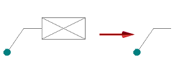

General page (Solid Edge Options dialog box, Profile environment)
- Show Units in Value Fields
-
Displays the units of measurement in value boxes.
- Reference Plane Size
-
Specifies the size of the base reference planes.
- Plane Name Display
-
Displays a dialog box where you can define display settings for reference plane names such as color, height, font. You can also turn the display on or off or the plane orientation display on or off.
- Maximum Print File Size
-
Sets the maximum print file size. You can set the maximum as high as 160 MB.
- Revision Delimiter
-
Specifies the delimiting character used by the Increment Name command to separate the document's name from the revision number.
- Part and Assembly Undo Steps
-
Specifies the number of steps available in the Undo list in the Part and Assembly environments.
- Enable Dynamic Edit of Profile/Sketches
-
Modifies the shape or size of the profile or relocates a dimension. When this option is cleared, you can only use the Dynamic Edit option to edit the value of a dimension. You can dynamically edit an under-constrained profile. You can also specify whether the profile is recomputed continuously as you drag the mouse, or you can specify that the model is only recomputed after you release the mouse button.
- Recompute Continually During Edit
-
Specifies that the model is recomputed as you drag an element's handle to a new location. When this option is set, dynamically editing the shape or size of an under-constrained profile on a large model can be time-consuming.
- Recompute After Edit
-
Specifies that when dragging an element's handles to a new location, the model is recomputed after you release the mouse button.
- Enable Value Changes Using the Mouse Wheel
-
When selected, using the mouse wheel changes a value in the value edit box. Use Ctrl+mouse wheel to zoom in and out of the model view.
When cleared, using the mouse wheel zooms in and out of the model view. Use Ctrl+mouse wheel to change a value in the value edit box.
- Recompute Assembly During Sketch Edits
-
Specifies that part positions are recomputed automatically while you are editing an assembly sketch. This option is useful when parts are constrained to elements on an assembly sketch.
- Recompute Continually During Edit
-
Specifies that the assembly is recomputed as you drag an element's handle to a new location. When this option is set, dynamically editing the shape or size of an assembly sketch can be time-consuming in a large assembly.
- Recompute After Edit
-
Specifies that when dragging an element's handles to a new location, the assembly is recomputed after you release the mouse button.
- Profile Undo Steps
-
Specifies the number of steps available in the Undo list in the Profile environment.
- IntelliSketch Options
-
Displays the IntelliSketch dialog box where you can set cursor behavior, set automatic dimensioning options, and specify which relationships are recognized as you draw.
- Preferred 2D paste behavior (Draft, Ordered Sketch/Profile)
-
Specifies whether the Paste command pastes elements to the original position from which you cut or copied the elements or to the position you select.
- Paste to original position
-
Specifies that elements are pasted to the original position from which you cut or copied the elements.
- Paste to selected position
-
Specifies that elements are pasted to the position you select.
- When Creating New Synchronous Sketches
-
Specifies region and dimension behavior.
- Enable Regions within sketches
-
Sets display for regions before creating new sketches. The global setting does not impact existing sketches.
- Migrate geometry and dimensions when features are created
-
-
The used sketches move to the Used Sketches collection in PathFinder.
-
Dimensions migrate to the model edges when possible.
-
- Indicate Under-Constrained Profiles in PathFinder
-
Specifies that a symbol is displayed in Feature PathFinder when a sketch or profile-based feature needs additional relationships to fully define its shape and position.
- When Entering Profile/Sketch
-
Controls whether a new window is created when working with a profile or sketch. You can also specify whether the active window is oriented parallel to the profile plane when drawing a profile or a sketch.
- Create A New Window
-
Specifies that a new window is created when you draw a profile or a sketch. The new window is automatically oriented parallel to the profile plane.
- Draw in the Active Model Window
-
Specifies that the existing window is used when you draw a profile or a sketch.
- Orient The Window To The Selected Plane
-
Available when the Draw in the Active Model Window option is selected. Orients the window parallel to the profile plane. This can make it easier to visualize complex profiles and to add relationships. When this option is cleared, the existing window orientation is maintained when drawing a profile or sketch.
- Show empty callouts and text boxes
-
Specifies that the empty callout symbol is displayed to identify a callout or a text box without content.

Leader lines attached to empty callout symbols are still displayed.

How do I
Open the Solid Edge Options dialog boxLearn more
File locationsLook up more details
General tab (Solid Edge Options dialog box, Draft environment)View page (Solid Edge Options dialog box, Draft environment)
Save page (Solid Edge Options dialog box)
File Locations page (Solid Edge Options dialog box)
Manage tab, Solid Edge Options dialog box
User Profile page (Solid Edge Options dialog box)
Manage page (Solid Edge Options dialog box)
Dimension Style page (Solid Edge Options dialog box)
Drawing View Style tab (Solid Edge Options dialog box)
Generative Design tab (Solid Edge Options dialog box)
Drawing View Wizard tab (Solid Edge Options dialog box)
Helpers tab (Solid Edge Options dialog box)
Attachment Units page (Solid Edge Options dialog box, Draft)
Edge Display tab (Solid Edge Options dialog box)
Drawing Standards tab (Solid Edge Options dialog box)
Annotation tab (Solid Edge Options dialog box)
General page (Solid Edge Options dialog box, Part environment)
Colors tab (Solid Edge Options dialog box)
Colors tab (Solid Edge Options dialog box, Draft)
View page (Solid Edge Options dialog box, Part environment)
Inter-Part page (Solid Edge Options dialog box)
Simulation tab (Solid Edge Options dialog box)
Thermal Load Options dialog box
General page (Solid Edge Options dialog box, Assembly environment)
Units page (Solid Edge Options dialog box)
View page (Solid Edge Options dialog box, Assembly environment)
Assembly page (Solid Edge Options dialog box)
Assembly Open As page (Solid Edge Options dialog box, Assembly environment)
Shape Search page (Solid Edge Options dialog box)
Requirements page (Solid Edge Options dialog box)
Electrical Routing page (Solid Edge Options dialog box)
Tube Properties page (Solid Edge Options dialog box)
Flat Pattern Treatments page (Solid Edge Options dialog box)